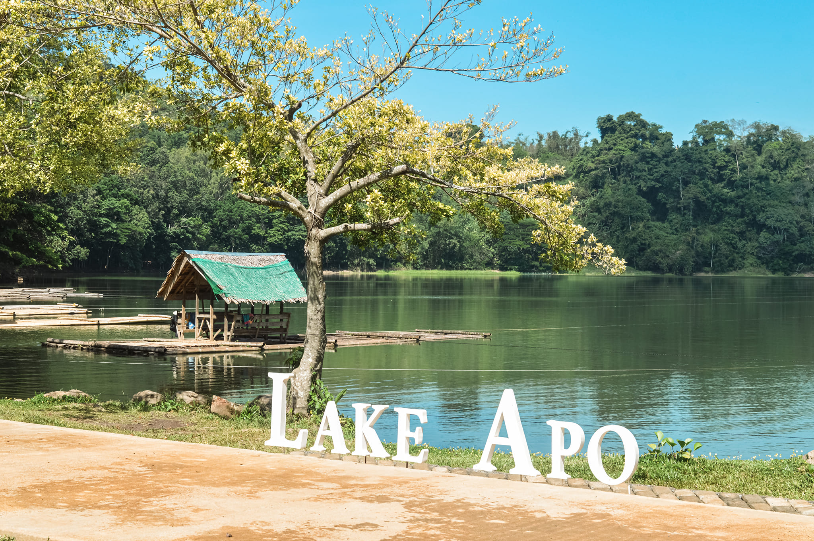
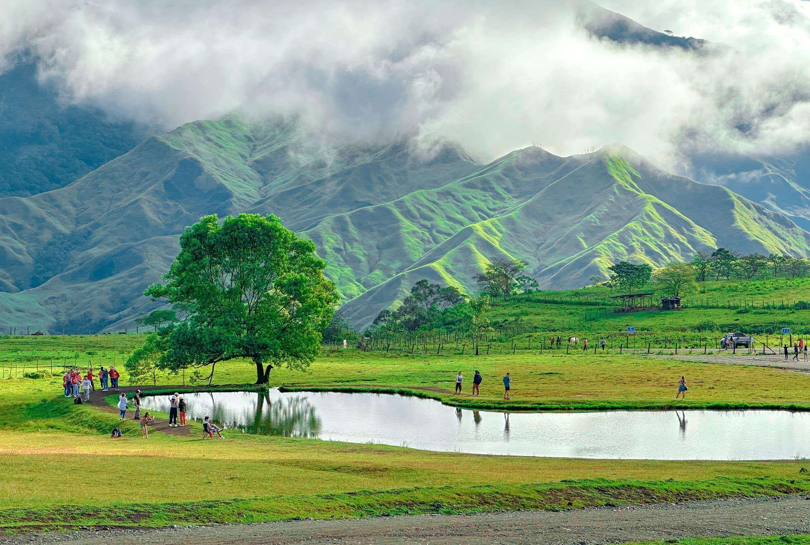

Community & Engagement
Explore our curated collection of inspiring images, videos, and podcasts designed to uplift, educate, and promote mental health and wellness. At Mindful Space, we believe that mental health is a vital part of our overall well-being, and our multimedia resorces offer support, inspiration, and guidance for those on their mental wellness journey. Whether you're seeking calming visuals, motivational talks, or expert advice, our collection is here to guide and empower you every step of the way.
Bukidnon offers various tranquil spaces where people can relax and reconnect with nature or themselves. These areas not only provide a break from daily stress but also contribute to mental health by reducing anxiety, improving mood, and fostering mindfulness. Here are some notable locations: 1. Dahilayan Gardens and Resort (Manolo Fortich): The serene environment, cool climate, and lush greenery provide a relaxing atmosphere that reduces stress and enhances mental clarity by lowering cortisol levels. 2. Mt. Kitanglad Range Natural Park: Trekking or enjoying the pristine beauty of this UNESCO park encourages physical activity and fosters a sense of accomplishment, helping to combat depression and boost mental health. 3. Lake Apo (Valencia City): This crater lake, surrounded by lush vegetation, offers a serene setting where activities like boating, picnicking, or admiring the calm waters help reduce stress and soothe the mind. 4. Impasugong Communal Ranch (Impasugong): Known as the home of Bukidnon's cowboy culture, its wide-open fields, rolling hills, and grazing animals create a peaceful, stress-free environment that feels like an escape into another world. References:https://shorturl.at/M1pVZ
https://shorturl.at/qNF3x
https://shorturl.at/C4awi
https://shorturl.at/yTDd6

